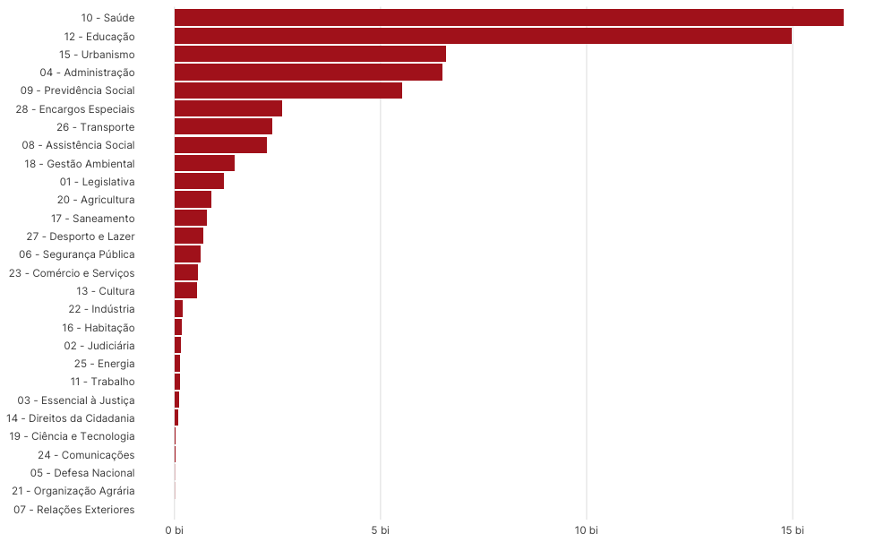
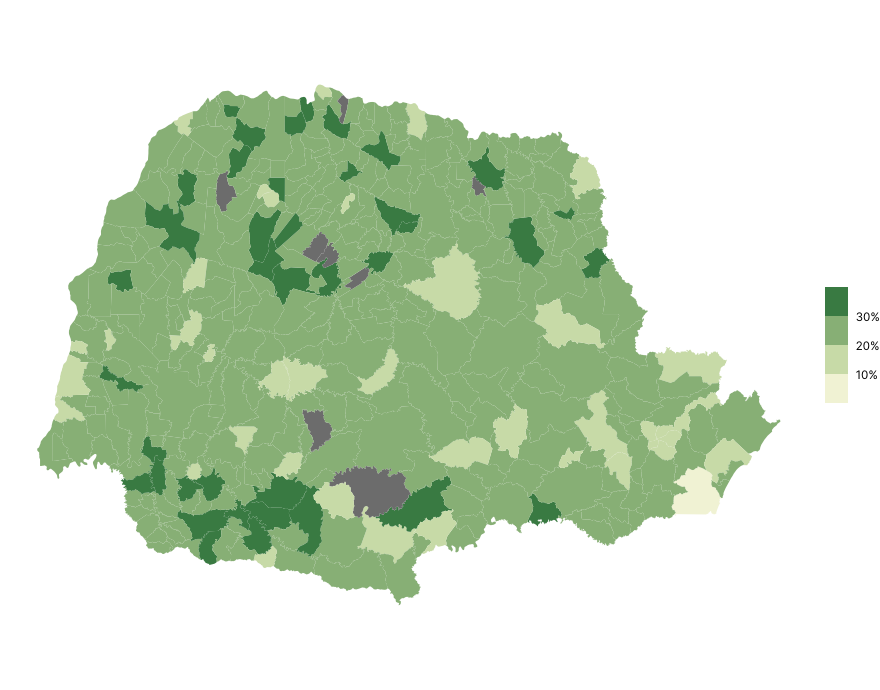
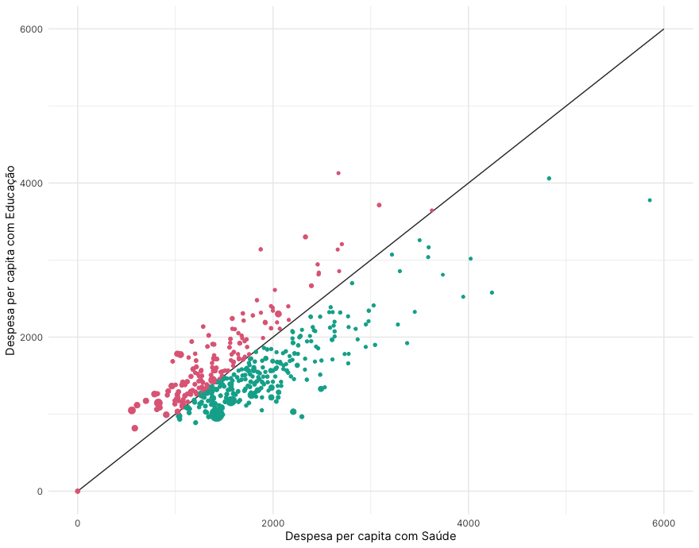
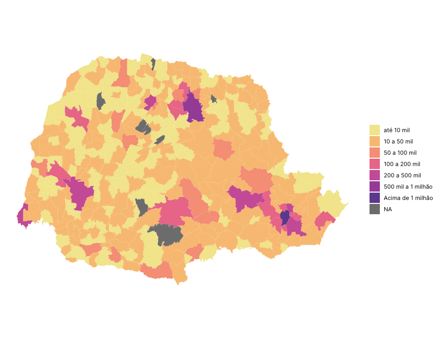

população
11,4 milhões
quantidade de municípios
399
municípios no siconfi
98%
pib estadual
R$ 756 bilhões
Despesas do Estado
R$ 67,6 bilhões
Despesas dos Municípios
R$ 65 bilhões
Despesas por área de atuação do governo
Despesas dos Municípios do Estado

Despesas com em relação ao total de despesas do município

Perfil dos municípios
A análise do perfil dos municípios paranaenses possibilita uma visão ampla e integrada das diferentes dimensões que compõem a realidade local. Ao reunir informações sobre aspectos demográficos, socioeconômicos e territoriais, este painel busca oferecer um panorama que auxilia na compreensão das particularidades regionais e nas tendências de desenvolvimento.
Mais do que números isolados, os gráficos aqui apresentados permitem observar padrões, contrastes e oportunidades que emergem a partir da comparação entre diferentes municípios. Essa abordagem contribui para fortalecer a tomada de decisão, estimular debates qualificados e orientar estratégias que visem à melhoria da qualidade de vida da população.

Distribuição da População
